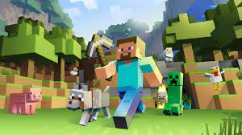
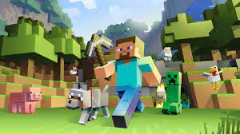
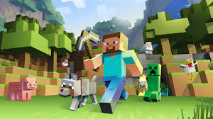

Este é um projeto em andamento, o objetivo é criar um jogo sandbox como: Minecraft e Terraria; as mecânicas são uma mistura de "modelo" 3D do Minecraft, combinado com a gama de incríveis aventuras e os desafios do Terraria, mais a geração de terreno inspirada no mod Terraforged
